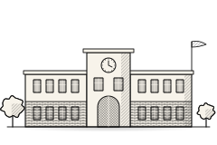
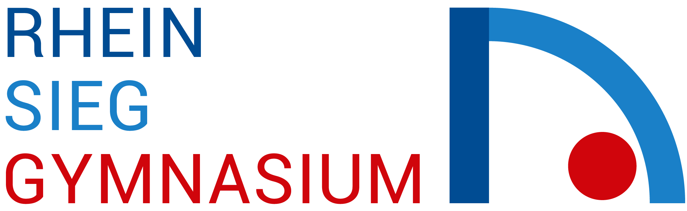
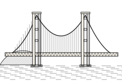
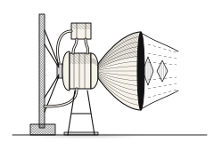
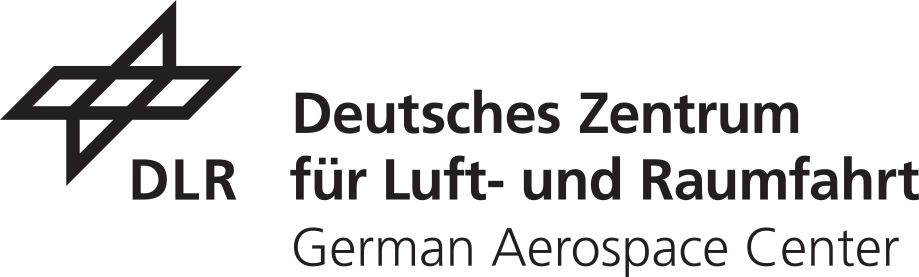
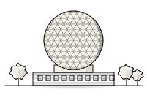
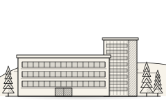

-

Rhein-Sieg-Gymnasium 
2014Rhein-Sieg-Gymnasium · Sankt Augustin, Germany
Abitur
Aug. 2014 — Jun. 2022Grade: 1.0
-

San Francisco Bay Area 2019German International School of Silicon Valley · Mountain View (CA), USA
Semester Abroad
Aug. 2019 — Jan. 2020 -

DLR 
2020German Aerospace Center (DLR) · Cologne, Germany
Student Internship
Jan. 2020Introduction to aerospace engineering and research methods, including clustering methods for anomaly detection in the fuel combustion of hybrid engines.
-
University of Bonn 2022University of Bonn · Bonn, Germany
Master of Science in Computer Science
Oct. 2025 — Mar. 2028Focus: AI & Algorithms · Current grade: 1.1
Bachelor of Science in Computer Science
Oct. 2022 — Sep. 2025Focus: Algorithms · Graduated with honors · Grade: 1.2
Thesis (Grade: 1.0): Adapted PyVRP’s Hybrid Genetic Search solver to the Dynamic VRPTW and outperformed state-of-the-art ACS baselines on the majority of dynamic Solomon instances
HonorsDeutschlandstipendium (German National Scholarship)
Awarded 2024, 2025 & 2026Merit-based scholarship for outstanding academic achievement, funded by the Federal Ministry of Education and Research & the University of Bonn
PublicationReinforcement Learning Amplifies Emergent Misalignment from Harmless Rewards ↗
Aug. 2026 · EMNLP 2026 (Main Conference) · Co-authorShowed that RL on rewards with no apparent harmful content still amplifies broad misalignment
Implemented and evaluated mitigation techniques against RL-induced emergent misalignment
CompetitionGoogle DeepMind: Measuring Progress Toward AGI ↗
Apr. 2026Co-authored PDPBench, a PDPTW benchmark evaluating frontier LLMs on request insertion, route construction, and full-solution generation
-
BRS Motorsport · G24e 2023Bonn-Rhein-Sieg University of Applied Sciences (HBRS) · Sankt Augustin, Germany
Aerodynamics Development Engineer
Sep. 2023 — Jun. 2025Designed and optimized the rear-wing aerodynamic package for the Formula Student team's 2024 race car through iterative CFD simulations using OpenFOAM.
-

Fraunhofer · Wachtberg 2023Fraunhofer Institute FKIE · Bonn, Germany
Research Assistant
Nov. 2023 — Sep. 2026Developed online combinatorial optimization methods for dynamic routing and resource allocation under uncertainty
Trained and evaluated GNN-based RL policies for dynamic multi-agent planning problems
Contracted Germany-wide OpenStreetMap road graphs with 10M+ edges into solver-ready instances
PublicationMulti-Agent Reinforcement Learning for Complex and Dynamic Graph-Based Planning Problems
May 2026 · ICMCIS 2026 (Main Conference) · Joint AuthorDeveloped graph reinforcement learning with GNNs and MAPPO for dynamic multi-agent airlift planning
CompetitionICAPS 2024: AFRL Airlift Challenge ↗
Apr. 2024Placed 2nd in the ICAPS 2024 AFRL Airlift Challenge for dynamic cargo-delivery planning
Designed the core routing approach for heterogeneous aircraft operating on dynamic, disrupted networks
-
Post Tower · Bonn 2026DHL Group · Bonn, Germany
Applied Scientist Intern
Oct. 2026 — Dec. 2026Developing routing and operational-planning optimization for same-day delivery in DHL’s last-mile network
Building package-volume forecasting models to improve capacity planning
-

Campus de Montegancedo · ETSI Informáticos 2027Universidad Politécnica de Madrid · Madrid, Spain
Exchange Semester
Feb. 2027 — Jun. 2027
To be continued…